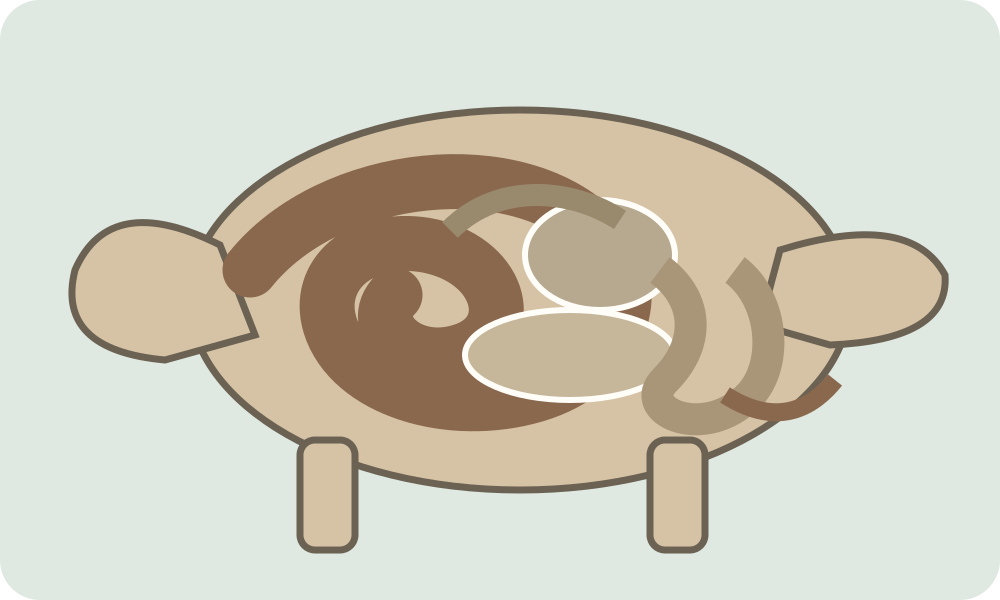

Vertering bij herbivoren
Vul hier specifieke eigenschappen van het verteringsstelsel van herbivoren in.
Runderenwijzer
Ontdek de spijsvertering van herbivoren en de uiterlijke kenmerken van een rund.
Plaat 1
Klik op een onderdeel van het verteringsstelsel.

De uitleg die je zelf invult, verschijnt hier.
Vul hier specifieke eigenschappen van het verteringsstelsel van herbivoren in.
Vul hier de belangrijkste verschillen tussen het verteringsstelsel van herbivoren en omnivoren in.
Plaat 2
Klik op een kenmerk om je eigen uitleg in te vullen.